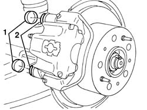
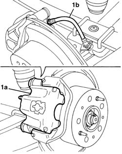
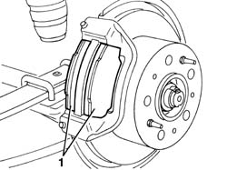

3310B60 REAR BRAKE PADS - REPLACE - INCLUDES HANDBRAKE ADJUSTMENT IF NECESSARY
- Path
- Procedures > 33 BRAKING SYSTEM > 3310 DISC BRAKES > 3310B REAR DISC BRAKES > 3310B60 REAR BRAKE PADS - REPLACE - INCLUDES HANDBRAKE ADJUSTMENT IF NECESSARY
- Kind
- repair procedure (removal / refitting; the operation number is the code)
- Applies to
- all engines; all production periods
- Interactive page
- https://sloeber94.github.io/elrnDB-fDct/en/#/244001087
Applies to: all engines; all production periods
 Removing
Removing
 Refitting
Refitting- Remove the the rear wheel.
1. Release the protective boot.
2. Undo the brake caliper fixing bolts.

Applies to: all engines; all production periods
1. Move the caliper (1a) slightly without disconnecting the hydraulic system pipe (1b).

Applies to: all engines; all production periods
1. Remove the brake pads.

Applies to: all engines; all production periods
Refitting
Removing- Place the brake pads in position.
- Place the brake caliper in position.
- Tighten the new brake caliper fixing bolts.
- Fit the protective boots.
- Refit the wheel.
- Check that the brakes are working.